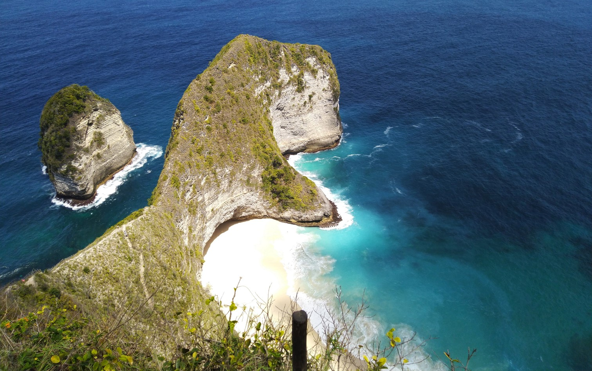
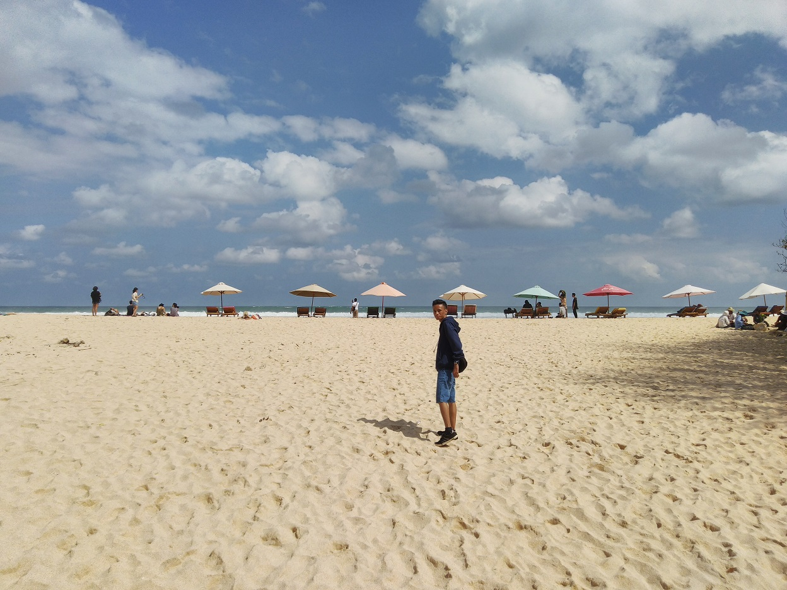
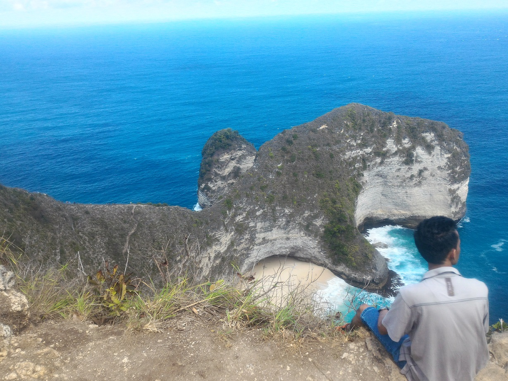
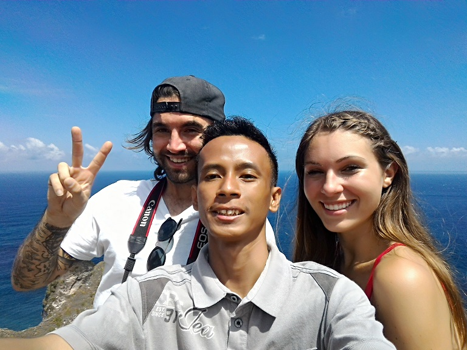
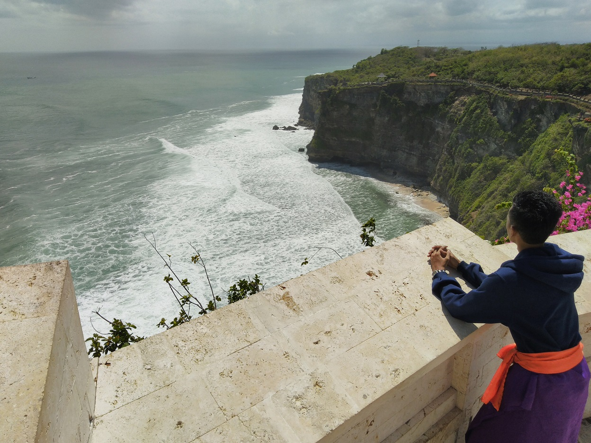
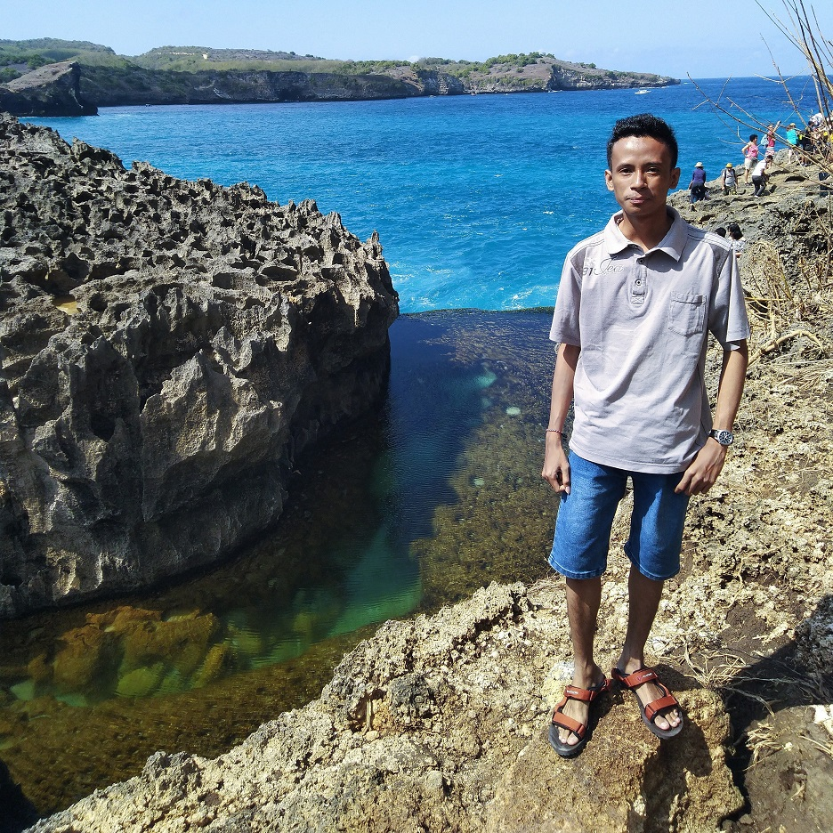
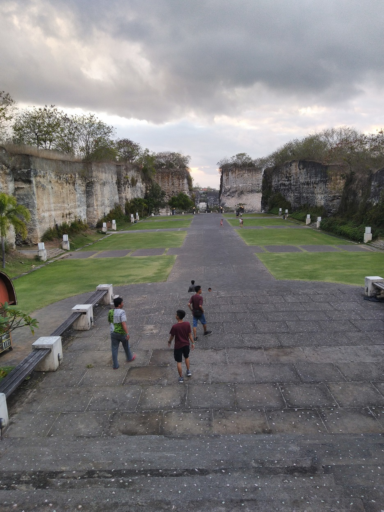
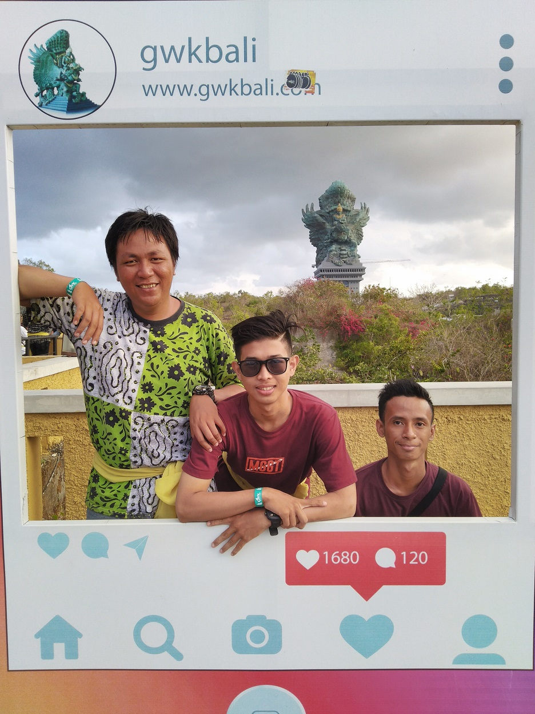
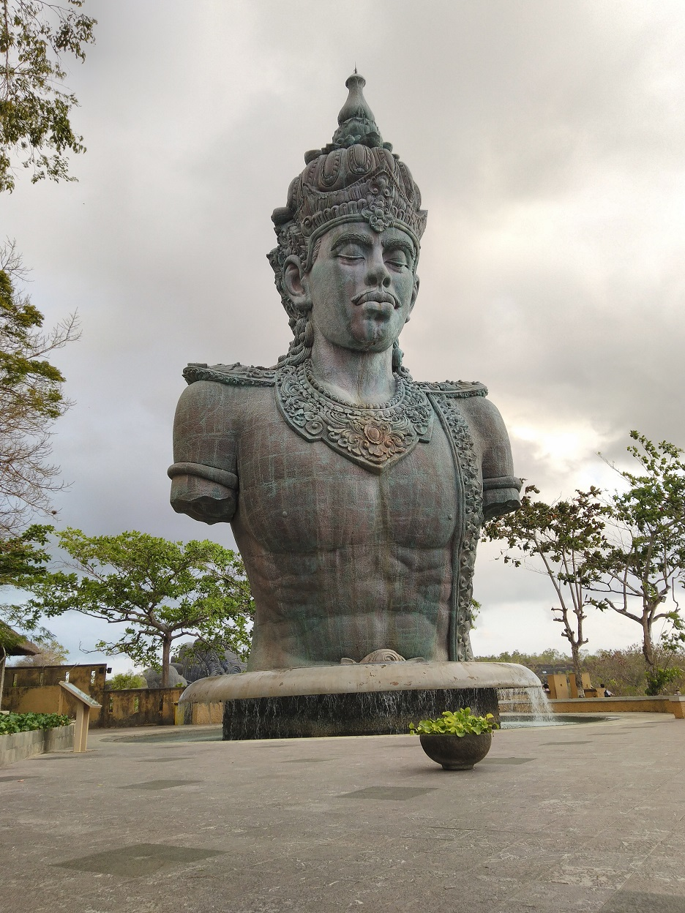

Wisata Nusa Penida
Pulau Nusa Penida merupakan daerah kepulauan kecil yang terletak di bagian selatan Bali daratan dan dipisahkan oleh selat Badung. Sehingga apabila anda ingin liburan/tour atau tirtayatra ke Nusa Penida, Anda harus terlebih dahulu menyebrang melalui jalur laut. Sarana transportasi laut ke Nusa Penida tersedia seperti sampan tradisional (jukung), boat cepat (speed boat), kapal roro Nusa Jaya Abadi ( moda transportasi utama).
Ada begitu banyak tempat indah, Unik, Mempesona, Eksotis dan tentunya Terbaik untuk menghabiskan liburan di Nusa Penida. Berikut adalah beberapa rekomendasi wisata terbaik yang ada di Nusa Penida yang pernah saya kunjungi.
Pantai Kelingking

Pantai Kelingking atau Karang Dawa terletak di Desa Buga Mekar. Pantai ini bisa disebut ikonnya Nusa Penida. Hampir semua travel inflencer Indonesia pernah melakukan sesi pemotretan di sini.
Lanskap utamanya berupa laut dan tebing karang. Salah satu tebing karang di Nusa Penida berbentuk seperti jari kelingking. Konon, sarat akan nilai historis. Untuk menuju Pantai Kelingking, kamu harus getol bertanya kepada warga sekitar. Sebab, lokasinya tak tertangkap baik oleh GPS. Kamu juga harus berhati-hati kalau membawa motor sendiri, karena jalurnya rusak dan berkelok-kelok.
Angel's Billabong

Angel’s Billabong adalah pantai dengan karang yang membentuk koridor. Di tengah karang terdapat air laut dengan warna gradasi, yakni biru muda, biru tua, dan tosca. Berlokasi di Sakti, Nusa Penida, jarak Angel’s Bilabong 300 meter dari Broken Beach
Broken Beach

Dari sejumlah pantai dengan karang bolong di Indonesia, Broken Beach atau Pantai Uug merupakan salah satu yang tereksotis. Potret pantai ini bila ditangkap menggunakan kamera udara tampak seperti sumur raksasa.
Karang itu membentuk lingkaran yang besar dengan lubang menganga lebar di tengahnya. Di dalam lubang itu terdapat kolam air laut yang lebih mirip teluk. Broken Beach tak jauh-jauh amat dari Pantai Kelingking. Keduanya sama-sama berlokasi di Desa Bunga Mekar.
Crystal Bay

Crystal Bay atau dulu sering dikenal Pantai Penida menawarkan pemandangan yang mengesankan dan panorama yang indah.
Dikelilingi oleh dua tanjung dan sebuah bukit kecil di laut lepas, masyarakat setempat menyebutnya Batu Jineng. Crystal Bay menjadi tempat paling favorite bagi banyak pengunjung baik internasional dan lokal sebagai tujuan wisata.
Bagi Anda yang suka senja, tempat wisata nusa penida ini rekomdasi banget karena pantainya menghadap ke barat, Jadi anda bisa menyaksikan matahari terbenam (Sunset Nusa Penida). Tidak hanya itu, di crystal bay anda juga dapat melakukan aktivitas seperti diving, snorkeling, berenang, berjemur, bermain bola pantai.
Gallery







